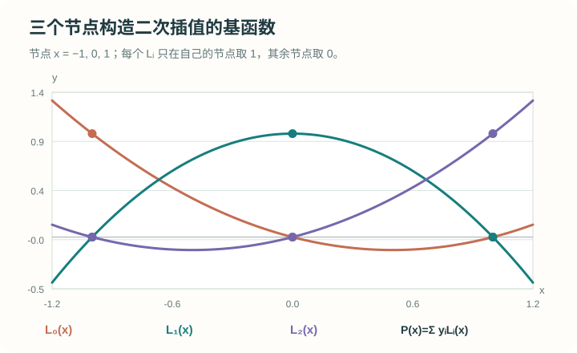
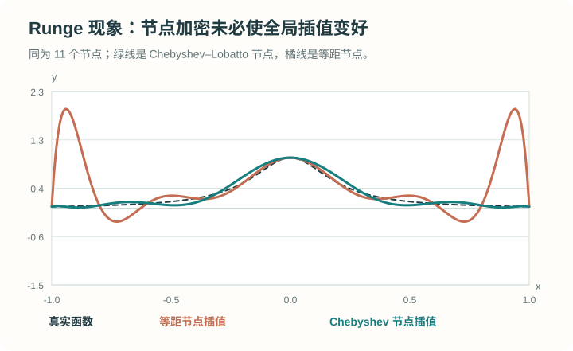

CHAPTER 03 · NUMERICAL ANALYSIS
Lagrange 插值与 Runge 现象
从离散样本构造多项式，为什么增加节点不一定提高精度？通过三节点基函数和 Runge 反例理解插值误差与节点分布。
01 · 只有几个采样点，如何知道中间的值？
假设一个空间坐标 x 在 −1、0、1 处测得数值 2、1、2。如果我们想知道 x=0.5 处的值，就需要从有限采样中构造一条曲线。插值要求曲线准确经过已知节点；它与允许偏离观测的最小二乘拟合不同。
对三个横坐标互异的点，存在唯一一个次数至多为 2 的多项式通过全部三个节点。当前数据恰好符合 P(x)=x²+1，所以 P(0.5)=1.25。这种唯一性来自“一个非零二次多项式不能拥有三个互异零点”，而不是绘图软件的拟合偏好。
02 · 先造出“只响应一个节点”的基函数
令互异节点为 x₀,…,xₙ，观测值为 y₀,…,yₙ。构造基函数 Lᵢ(x)，使它在自己的节点取 1，在其他节点取 0。它的表达式可以直接从各个节点差的比值构造：
在 x=xₖ 处，除了第 k 个基函数，其余所有项都包含零因子；第 k 项则精确为 1，因此 P(xₖ)=yₖ。这一机制无需直接求解 Vandermonde 线性方程组。

03 · 通过每个样本不等于处处准确
给定原函数 f，插值多项式只保证在节点处等于 f。如果 f 在相关闭区间上有连续 n+1 阶导数，并且求值点位于节点所覆盖的区间内，则存在依赖于 x 的点 ξ，满足插值余项公式：
误差由高阶导数和节点距离乘积共同控制。函数光滑并不保证“把节点均匀加密”总会得到更好的全局高次多项式；插值节点分布本身就会影响放大行为。
04 · Runge 现象：更多等距节点为何可能更糟？
考虑 f(x)=1/(1+25x²)，区间为 [-1,1]。使用 11 个等距节点进行十次全局多项式插值，会在区间两端产生明显振荡；若同样使用 11 个 Chebyshev–Lobatto 节点，节点在两端更密，所得到的曲线在本例中显著改善。

这不是说高次多项式总是错误。实际误差受到目标函数、节点分布、算术精度和表示形式共同影响。若需要稳定处理持续增长的数据序列，通常也会考虑分段低次插值，减少全局耦合。
05 · 最小代码与数值实现选择
下面的嵌套循环直接实现 Lagrange 定义，适合少量节点、验证推导和理解基函数。它对每个求值点执行 O(n²) 量级的乘除；多点求值、较高次数和非均匀尺度时应考虑更适当的实现。
def lagrange(xs, ys, x):
assert len(xs) == len(ys) > 0
assert len(set(xs)) == len(xs)
ans = 0.0
for i in range(len(xs)):
term = ys[i]
for j in range(len(xs)):
if i != j:
term *= (x-xs[j])/(xs[i]-xs[j])
ans += term
return ans
xs, ys = [-1., 0., 1.], [2., 1., 2.]
assert abs(lagrange(xs, ys, .5)-1.25)<1e-12
print(lagrange(xs, ys, .5)) # 1.25对于固定节点反复求值，重心（barycentric）Lagrange 形式可预先计算节点权重，减少求值开销并改善若干数值稳定性问题。权重计算也需注意溢出和尺度；数学插值余项与程序舍入误差应分开评估。
原始资料与延伸阅读
以下资料用于核对定理适用条件、稳定计算形式和库函数行为。本页的图解与算例均独立构造。
- Jean-Paul Berrut & Lloyd N. Trefethen, Barycentric Lagrange Interpolation。SIAM Review 46(3), 2004，重心插值形式与数值计算。
- Nicholas J. Higham, Accuracy and Stability of Numerical Algorithms。数值误差分析和稳定性的方法论。